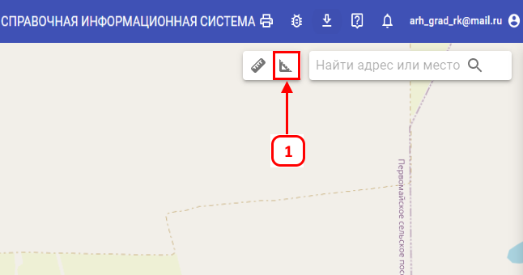
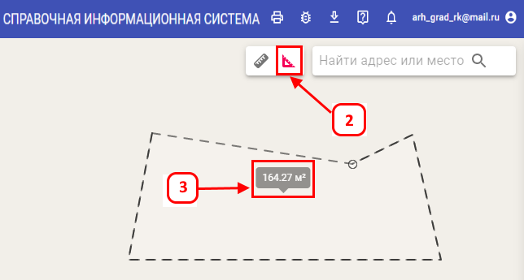
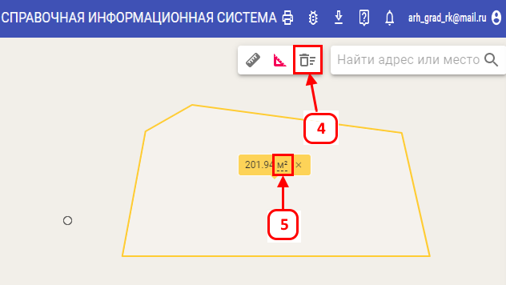

Измерение площади
-
Для того чтобы измерить площадь необходимо в правом верхнем углу нажать кнопку «Измерить площадь» (1) кнопка
становится активной (изменяет цвет)(2)
-
Необходимо левой кнопкой мыши кликнуть в трёх или более местах на карте, по мере рисования над курсором будет
подсказка с отображением текущей площади(3)
-
После двойного клика ЛКМ в последней точке полигон и подсказка меняют цвет, рядом с кнопками линеек появляется
кнопка «Удалить все измерения»(4). На подсказке единицы измерения подчёркнуты пунктиром, после нажатия на единицы
измерения изменяются с «м²» на «га» или обратно(такие единицы измерения работают при площади от 100 до 1000 м², от
1000 м² единицы измерения меняются с «га» на «км²» и обратно).


